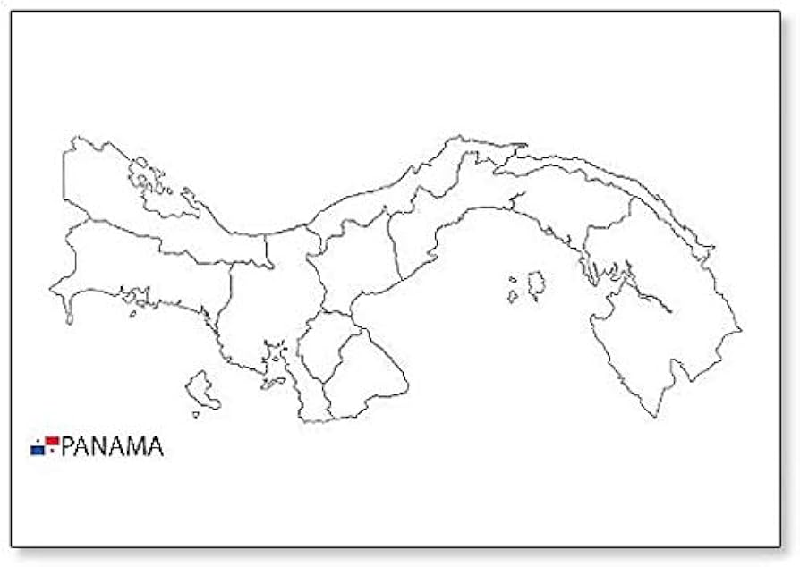

SIMBOLOS PATRIOS
ESCUDO
Es una maravillosa obra artística de Don Nicanor Villalaz, cuyo diseño relata cada suceso de nuestra
historia, desde la separación de Panamá de Colombia aquel atardecer de 1903, así como el espíritu de
lucha que acompañó y acompaña al pueblo panameño a través de la historia. El Escudo Nacional fue
modificado mediante la Ley 119 de 30 de diciembre de 2013, la cual crea una décima provincia en la
República de Panamá establece que a partir del 1 de enero de 2014 se colocaran diez estrellas de oro al
Escudo Nacional. A cada lado del escudo hay dos pabellones nacionales.
BANDERA
dividida en cuatro cuarteles, su bello tricolor (azul, rojo y blanco) conforma nuestro emblema
representativo ante el mundo. La primera bandera de Panamá fue confeccionada por María Ossa de Amador.
El blanco representa la paz para hacer patria en la nueva nación; el color azul representa el partido
conservador; el color rojo, el partido liberal. La estrella azul simboliza la pureza y la honestidad que
rigen la vida cívica del país; la estrella roja, la autoridad y la ley que habrán de imponer el imperio
de estas virtudes.
AVE
El águila harpía es el ave nacional de Panamá y la especie símbolo de la diversidad biológica de
Ecuador. También, es el ave de la Federación Panameña de Fútbol (FEPAFUT), y de la Fuerza Aérea
Colombiana. En ella está inspirado el helicóptero Arpía IV.
La Alcaldía de la Ciudad de Panamá realiza todos los años el "Festi Harpía", un festival donde se hace
homenaje a su Ave Nacional y se busca educar, orientar, e incentivar a las nuevas generaciones a
protegerla.
ARBOL

El nombre genérico del árbol Panamá deriva del latín “Stercus” que significa excremento, debido al olor
característico de hojas y flores. Es de la misma familia que el árbol de cacao. Es el árbol nacional de
la República de Panamá y se considera que éste originó el nombre del país. Fue declarado oficialmente
con el Decreto de Gabinete No. 371 del 26 de noviembre de 1969.
FLOR

La Peristeria Elata, conocida también comúnmente como “flor del Espíritu Santo” por su parecido a una
paloma blanca, pertenece a la familia de las orquídeas, se caracteriza por tener pétalos de un color
marfil intenso y florece en época de Pascua.
Aunque su procedencia es panameña, también florece en otras zonas como Colombia o Perú y su hábitat
ideal es un bosque sumamente húmedo, ya que suele florecer sobre musgos en troncos de árboles.
Como anécdota, la Peristeria Elata fue declarada Flor Nacional de Panamá en el año 1980 y es tal la
simbología de esta variedad de orquídea que, de forma anual y siempre durante el mes de septiembre, le
rinden homenaje con una exposición con su nombre, la Expoferia del Espíritu Santo.
Historia de Panama
Panamá, oficialmente denominada República de Panamá, es un país ubicado en América Central. Su capital
y ciudad más poblada es la Ciudad de Panamá. Limita al norte con el mar Caribe, al sur con el océano
Pacífico, al este con Colombia y al oeste con Costa Rica. Tiene una extensión de 75 517 km². Localizado en
el istmo del mismo nombre, franja que une a América del Sur con América Central, su territorio montañoso
solamente es interrumpido por la cuenca del canal de Panamá, la vía interoceánica que une al océano
Atlántico con el Pacífico. Su condición de país de tránsito lo convirtió tempranamente en un punto de
encuentro de culturas, provenientes de todo el mundo.
El país es el escenario geográfico del canal de Panamá, obra que facilita la comunicación entre las costas
de los océanos Atlántico y Pacífico; y que influye significativamente en el comercio mundial. Su población
en 2020 ascendía a 4,279,000 habitantes. Al ser un país mayoritariamente católico, el 9 de septiembre del
2000, Año santo jubilar, la Conferencia Episcopal Panameña proclamó oficialmente a Santa María La Antigua
como Patrona de la República de Panamá.
Políticamente, su territorio está constituido por diez provincias y por seis comarcas indígenas desde el año
2020. De acuerdo con la Constitución Política de la República de Panamá, el español es la lengua
oficial del país y todos los panameños tienen el deber de conocerla y el derecho a usarla. En 2006, era
la lengua materna del 93.1 % de los panameños. Otras lenguas, también panameñas, son reconocidas en el
sistema educativo en diversas comunidades, donde la población indígena es mayoritaria.20
Extension territorial de Panama

Tiene una super-
ficie aproximada de 78.200 km². Cuenta con 1.520 islas, destacando los
archipiélagos de San Blas y Bocas del Toro (Caribe) y Las Perlas (Pacífico).
En la frontera Este, la selva del Darién hace de frontera natural entre Panamá
y Colombia. Panamá es un país tropical, en algunas zonas con carácter selvático, aunque
existen cadenas montañosas de importante relieve (Volcán Barú o Chiriquí,
3.475 m.; Cerro Pando, 2.470; Cerro Santiago 2.830 m.).
Lista de los departamentos de Panama
- Bocas del Toro
- Coclé
- Colón
- Chiriquí
- Darien
- Herrera
- Los Santos
- Panamá
- Panamá Oeste
- Veraguas
- Comarca Emberá-Wounaan
- Comarca Guna Yala
- Comarca Ngäbe-Buglé
- Comarca Naso Tjërdi
- Comarca Guna de Madugandí
- Comarca Guna de Wargandí
Lugares turisticos que debes visitar si vas a Panama
Canal de Panamá

En las Esclusas de Miraflores está el centro de visitantes. El centro incluye un museo, el cual muestra
exhibiciones sobre la historia, héroes, todo el ecosistema del canal y una cinta sobre su creación.
En las afueras del centro, los turistas van a poder relajarse, o ver de forma cercana los barcos que
circulan por las esclusas de Miraflores. Por igual, tienen la posibilidad de almorzar en el Restaurante de
Miraflores, aprovechando la fantástica vista del canal.
Casco Antiguo

La Localidad de Panamá, cuenta con un lugar histórico donde los techos de teja naranja y el diseño colonial
español de la vieja ciudad de Panamá diferencian con los edificios de la bahía.
Bocas del Toro
ocalizado en la ribera noroeste del Caribe, este piélago tropical de 9 islas ha mantenido un profundo dominio
de las Indias Occidentales. Con un ecoturismo y travesía, goce de varias de las superiores clases de buceo y
surf en la zona.
Boquete es el domicilio de diversos de los superiores obreros de café de todo el mundo.